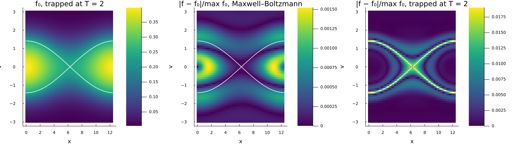
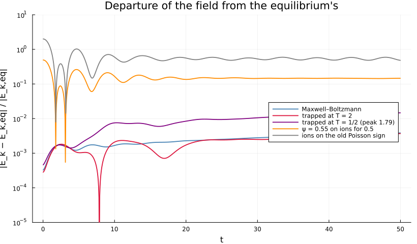

BGK equilibrium
A nonlinear equilibrium: does it stay put, and where does it give?
julia --project=verification verification/bgk-equilibrium.jlAny function of the particle energy W = v²/2 + U(x) is a stationary solution of the Vlasov equation; with an ion background whose charge makes U the potential, it is one of Vlasov–Poisson as well (Bernstein, Greene and Kruskal 1957). Here U = −ψ cos kx with ψ = 0.5, deep enough that two thirds of the electrons are trapped. A run started on such a state should stay on it, and what it does instead is the solver's error made visible – with no dynamics of the physics to hide behind.
Two equilibria. Maxwell–Boltzmann, F(W) ∝ exp(−W), is analytic across the separatrix between trapped and passing particles. Giving the trapped ones a temperature of their own keeps F continuous there but not its slope, and the comparison between the two is the point of the study: the error of the smooth one is spread over phase space and converges at the scheme's third order; the kinked one's sits on the separatrix and converges at first order.
bgk_equilibrium and bgk_distribution come from test/verification_harness.jl, and test/test_verification.jl asserts what this script draws.
using Plots
using Vasilek
include(joinpath(pkgdir(Vasilek), "test", "verification_harness.jl"))
here = @__DIR__
drift(r) = maximum(abs, r.f .- r.f₀)/maximum(r.f₀)
departure(r) = abs.(r.E .- r.E₀) ./ abs(r.E₀)
smooth = bgk_equilibrium()
kinked = bgk_equilibrium(T_trapped = 2.0)
println("through t = 50 on 64 × 121:")
for (name, r) in (("Maxwell–Boltzmann", smooth), ("trapped at T = 2", kinked))
println(" ", rpad(name, 20), "f ", round(drift(r); sigdigits = 3), " of its peak, field ",
round(maximum(departure(r)); sigdigits = 3))
endthrough t = 50 on 64 × 121:
Maxwell–Boltzmann f 0.00152 of its peak, field 0.00385
trapped at T = 2 f 0.019 of its peak, field 0.00369
Where the error goes
The equilibrium itself, and |f(50) − f₀| for both, with the separatrix v = ±√(2ψ(1 + cos kx)) drawn over them. The smooth case's error is a broad pattern over the trapped region; the kinked case's is a line, and the line is the separatrix.
window = findall(u -> abs(u) ≤ 3.0, smooth.v)
function panel(r, data, title; clims = nothing)
p = heatmap(r.x, r.v[window], data[window, :]; xlabel = "x", ylabel = "v",
title = title, color = :viridis, clims = clims)
plot!(p, r.x, r.v_sep; color = :white, linewidth = 1.5, label = "")
plot!(p, r.x, -r.v_sep; color = :white, linewidth = 1.5, label = "")
return p
end
peak = maximum(kinked.f₀)
maps = plot(panel(kinked, kinked.f₀, "f₀, trapped at T = 2"),
panel(smooth, abs.(smooth.f .- smooth.f₀) ./ maximum(smooth.f₀),
"|f − f₀|/max f₀, Maxwell–Boltzmann"),
panel(kinked, abs.(kinked.f .- kinked.f₀) ./ peak,
"|f − f₀|/max f₀, trapped at T = 2");
layout = (1, 3), size = (1500, 420), left_margin = 4Plots.mm,
bottom_margin = 6Plots.mm)
savefig(maps, joinpath(here, "bgk-equilibrium-error.png"));
The field, against the state it was meant to keep
The equilibria drift steadily at the level of the scheme's dissipation; a potential 10% off the one the ions hold is off by half at once; and ions built on the Poisson sign the documentation used to give hold the equilibrium's field reversed.
fieldplot = plot(yscale = :log10, xlabel = "t", ylabel = "|E_k − E_k,eq| / |E_k,eq|",
legend = :right, size = (820, 480), ylims = (1e-5, 10),
title = "Departure of the field from the equilibrium's")
for (name, r, color) in (("Maxwell–Boltzmann", smooth, :steelblue),
("trapped at T = 2", kinked, :crimson),
("trapped at T = 1/2 (peak 1.79)", bgk_equilibrium(T_trapped = 0.5), :purple),
("ψ = 0.55 on ions for 0.5", bgk_equilibrium(ψ = 0.55, ψ_ions = 0.5), :darkorange),
("ions on the old Poisson sign", bgk_equilibrium(ion_sign = -1), :gray))
plot!(fieldplot, r.t, max.(departure(r), 1e-6); label = name, color = color, linewidth = 1.8)
println(" ", rpad(name, 32), "largest field departure ", round(maximum(departure(r)); sigdigits = 3),
", f ", round(drift(r); sigdigits = 3))
end
savefig(fieldplot, joinpath(here, "bgk-equilibrium-field.png")); Maxwell–Boltzmann largest field departure 0.00385, f 0.00152
trapped at T = 2 largest field departure 0.00369, f 0.019
trapped at T = 1/2 (peak 1.79) largest field departure 0.0147, f 0.00988
ψ = 0.55 on ions for 0.5 largest field departure 0.493, f 0.0367
ions on the old Poisson sign largest field departure 2.0, f 0.157

This page was generated using Literate.jl.